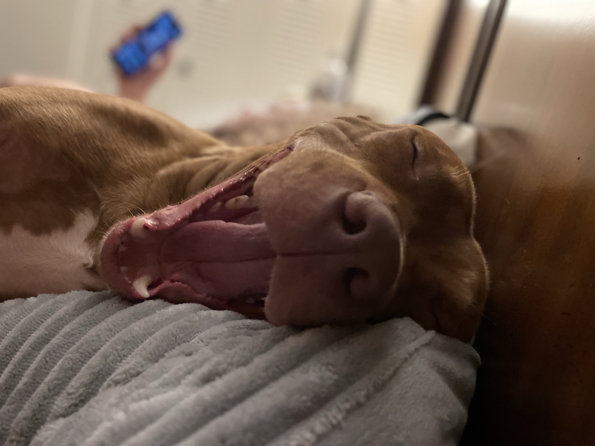
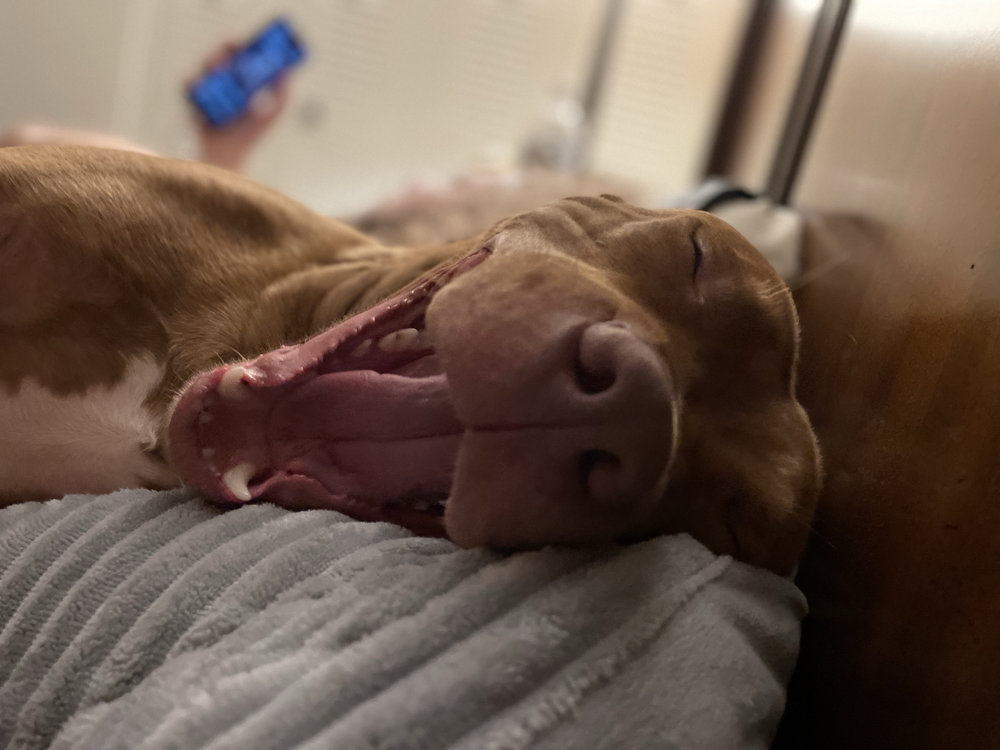

Odie

Photo Gallery

 

Likes
- Fluffy toys
- Bolting over the couch
- Cheese
Basil

Basil, otherwise known as Slaysil, is a very energetic white, slightly crusty and trusty, dog (bichon). She gets princess treatment in her household, but also out in public. As a consequence, she is very clingy and loves to lick, especially in the face.
She endeavors in multiple hobbies and activities, which include flying, licking, standing on two legs, ringing bells, and jumping through hula hoops.
Photo Gallery

Likes
Bacon Q Dog

Bacon Q. Dog is a 9yr old labradoodle. He prefers to spend his days lounging among the three different beds/couches that his family has gifted him. He enjoys a walk or two around the neighborhood, as long as he can pretend that he doesn't see any of the other animals to avoid the embarrassment of not wanting to admit he has no wolf-like skills in chasing them.
At night just as the rest of the family is ready to relax, Bacon suddenly wants to release all of his energy. He will place his toys on a mini couch and frantically drag the couch around, giving his toys "a ride." There is also a lot of rolling. Lots and lots of rolling.
Photo Gallery


Likes
- Belly rubs
- Playing tug-of-war
- Sneaking onto the couch
Bear

Bear is a lazy, food-loving dog that is sometimes playful. His favorite activity is lying in the sun on his side and lounging. He enjoys playing with his toys and loves to fetch them when you throw them, but eventually, he gets bored and just stops fetching them and lays down.
Bear is also scared of a lot of things. He doesn't like water (showers and even rain) or getting his nails clipped, and he's sometimes even so lazy that he'll just stop walking and sit down until you turn around and go back home.
Photo Gallery


Likes
- Food
- Laying in bed
- Fetch
York

York loves to stay active and go on long walks by his house. He also enjoys chewing on his large assortment of toys. His favorite toy is his squeaky pig. York’s favorite food is sausage, but cheese is another favorite.
York is a very sociable dog and is a licensed therapy dog. He frequently visits nursing homes and other places in an attempt to raise peoples’ spirits. When it comes to bedtime, York prefers to sleep alone in his favorite blue dog bed. He will always be the first to get up in the morning.
Photo Gallery


Likes
Jingle

Jingle loves going outside. He used to be an outdoor/indoor cat until we realized that he loved to get injured. Now, we take him on walks with a leash which he loves! Every time he sees me carrying the leash he goes crazy and meows to go out.
Jingle is very mischievous, he has gotten into many different accidents. His first accident was outside; a bee stung his paw and he cried all night long. The second one was ALSO outside, he got stuck on a tree for four days. Finally, he came back home one day with his tail bleeding and ripped out.
Photo Gallery


Likes
Zack

Zack is an African grey parrot, aged around three years old. Zack loves flying and being outside of the cage at all times. He's very nice but bites so much.
Zack's favorite foods are unsalted sunflower seeds and mangos. He loves being able to sit on people's shoulder and talking to them. Zack knows over 500 words and learns more everyday.
Photo Gallery


Likes
- Sunflower seeds
- Flying
- Going on walks